▲ 인삼 직거래 부스. 지난 회차 현장 사진으로 올해 배치와는 다를 수 있다 사진=한국관광공사
임진각 잔디밭에서 6년 키운 인삼을 시장 값보다 15~20% 싸게 사고, 같은 날 철책 너머로 이어지는 DMZ 길을 따라 장단콩 한 상을 먹는다. 파주시는 올해로 21회를 맞는 파주개성인삼축제를 2026년 10월 17일(토)~18일(일), 이틀간 임진각광장과 평화누리 일원에서 연다. 한국관광공사 축제 정보와 파주시·언론 보도 모두 같은 일정이고, 입장은 무료다. 이 글은 축제 자체보다 자가용으로 임진각에 도착해 평화누리 → DMZ 평화관광 → 장단콩 한 끼로 이어 가는 동선을 어디까지 공식 자료로 확인할 수 있는지에 초점을 맞췄다.
1. 일정과 장소 — 하루가 아니라 이틀이다
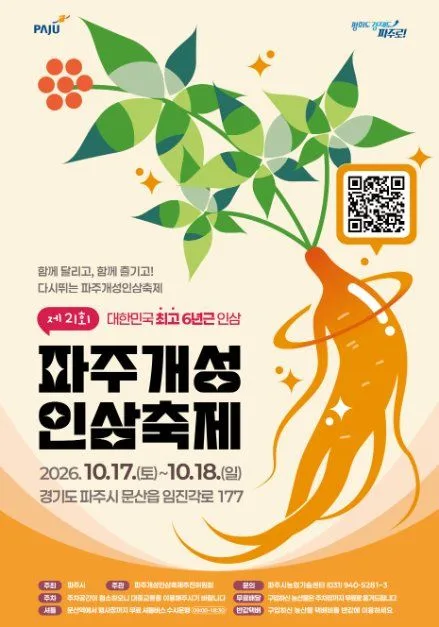
▲ 2026년 제21회 파주개성인삼축제 포스터. 포스터에는 10월 17일(토)~18일(일), '대한민국 최고 6년근 인삼' 문구가 들어 있다 사진=한국관광공사
검색 단계에서 전달된 일정(10월 17일)은 시작일이다. 한국관광공사 대한민국 구석구석 축제 정보, 파주시 관광 사이트, 머니투데이·신아일보·세계일보 등 보도가 모두 17~18일로 일치한다. 같은 축제가 2025년에는 10월 18~19일, 2024년에는 10월 19~20일이었고 매년 10월 셋째 주말 안팎에 열린다.
| 항목 | 내용 |
|---|---|
| 기간 | 2026년 10월 17일(토)~18일(일), 2일간 |
| 장소 | 임진각광장과 평화누리 일원(경기 파주시 문산읍 임진각로 177) |
| 주제 | 함께 달리고, 함께 즐기고, 다시 뛰는 파주개성인삼축제 |
| 입장료 | 무료 |
| 주최 | 파주시(문의 031-940-5282) |
| 장단삼백요리 경연 | 17일(토) 오전 10시 30분 임진각광장(서울신문 보도) |
| 개막식·그 밖 세부 시간표 | 공식 자료와 보도에서 확인하지 못함 |
주제 문구의 '달리고'는 인삼건강마라톤을 가리키는 것으로 보이지만, 마라톤 출발 시각·코스·접수 방식은 보도에 나오지 않았다. 달리기 참가를 생각한다면 파주시 문의처로 먼저 확인해야 한다.
한국관광공사 축제 정보에서 일정 확인 가능2. 무엇을 하나 — 6년근 직거래와 장단삼백요리
▲ 인삼 직거래 장터에서 인삼을 살펴보는 방문객들. 지난 회차(제20회) 현장 사진이라 올해 부스 배치와는 다를 수 있다 사진=한국관광공사
축제의 중심은 6년근 파주개성인삼이다. 파주시는 6년근만 선별해 출하한다고 밝혔고, 인삼은 장단면과 감악산 일대에서 재배된다. 행사 기간 인삼과 농특산물 약 10톤을 시중보다 15~20% 낮은 가격에 직거래로 판매한다. 올해(2026) 등급별 가격표는 파주시 사이트와 보도에서 확인하지 못했다. 아래는 파주시 관광 사이트에 올라 있는 2024년 가격으로, 올해 판매가와 다를 수 있어 어디까지나 비교 기준이다.
| 등급 | 가격 |
|---|---|
| 왕대 | 90,000원 |
| 특대 | 82,000원 |
| 대 | 74,000원 |
| 중 | 64,000원 |
| 소 | 54,000원 |
| 믹서 | 46,000원 |
| 파삼(등외삼) | 36,000원 |
같은 파주 인삼도 등급에 따라 kg당 가격이 두 배 이상 벌어진다. 현장에서 올해 등급별 가격표를 직접 확인하고 고르는 편이 안전하다.
| 프로그램 | 내용 | 비고 |
|---|---|---|
| 장단삼백요리 전국 경연대회 | 장단콩·개성인삼·파주쌀로 만든 요리, 전국 25개 팀 참가 | 17일 10:30 임진각광장(서울신문 보도). 18일 일정은 확인 못함 |
| 인삼 명인을 찾아라 | 등급별 우수 인삼 선정, 현장 경매 | 일부 보도에만 언급 |
| 인삼비빔밥 만들기 | 체험 프로그램 | 참가 방식 확인 못함 |
| 인삼건강마라톤 | 주제 문구와 연결된 달리기 행사 | 코스·시간·접수 확인 못함 |
| 허준 약방 한방촌(신규) | 초가집 2동에서 전통 약방 재현, 인삼차 시음 | 올해 새로 마련 |
| 전시관 | 파주개성인삼전시관, 인삼 활용 요리 전시관 | |
| 달빛극장 | 야간 영화 상영, 가족 관람 가능한 작품 중심 | 상영작·시간 미공개 |
| 거리·무대 공연 | 문화예술 공연 | 출연진 확인 못함 |
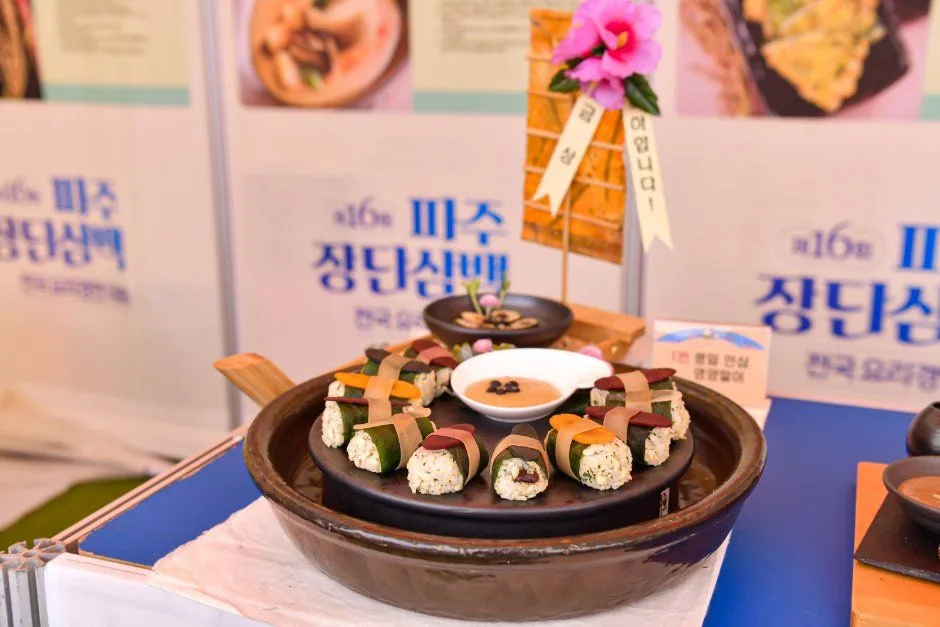
▲ 장단삼백요리 전국 경연대회 출품작. 지난 회차(제16회 현수막) 사진으로, 올해 메뉴는 아니다 사진=한국관광공사
'장단삼백'은 파주 장단 일대의 쌀·콩·인삼을 묶어 부르는 이름이다. 경연 출품작은 현장에서 맛볼 수 있다고 밝힌 자료는 없으므로 시식 여부는 기대하지 않는 편이 안전하다.
| 날짜 | 시간대 | 프로그램 |
|---|---|---|
| 첫째 날(10월 18일) | 오전 | 제16회 파주장단삼백요리 전국 경연대회 |
| 첫째 날 | 오후 | 청년·청소년 오픈마이크 페스티벌 |
| 둘째 날(10월 19일) | 오전 | 지역예술단체 문화공연, 판굿, 줄타기 |
| 둘째 날 | 오후 | 인삼 경매, 폐막공연 |
이 표는 아시아경제의 2025년 보도에 나온 구성이며 정확한 시각은 기사에 없다. 올해도 첫째 날 오전에 경연, 둘째 날 오후에 경매가 이어질 가능성이 있지만, 지난 회차 패턴에 근거한 추정일 뿐 올해 확정 일정은 아니다.
3. 자차로 가기 — 내비 목적지와 주차
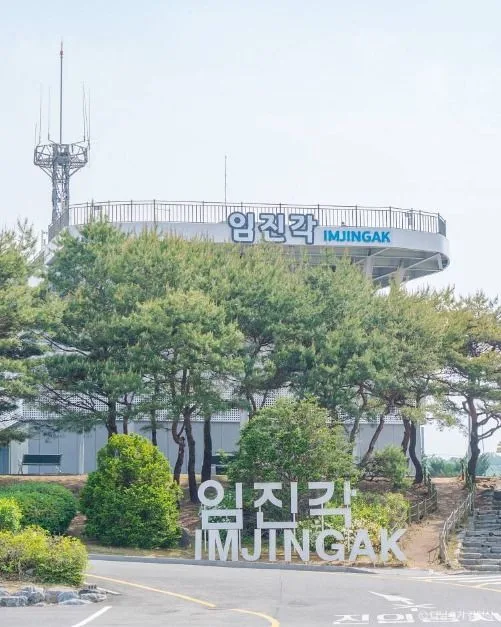
▲ 임진각 건물. 내비게이션에 '임진각' 또는 '임진각 관광지 주차장'을 입력하면 된다 사진=한국관광공사
축제장은 임진각 관광지 바로 옆이다. 자유로를 타고 임진각IC에서 빠지면 바로 닿는다. 파주시 축제 안내는 서울 신촌에서 자유로로 약 50분, 일산에서 약 30분으로 소개한다. 주말 오전 정체는 감안해야 한다.
| 항목 | 내용 | 출처·확인 상태 |
|---|---|---|
| 임진각 관광지 주차장 | 869면(일반 755·장애인 28·전기차 54·버스 32) | 파주도시관광공사 안내 |
| 운영시간 | 09:00~18:00(현장 여건에 따라 조정 가능) | 파주도시관광공사 안내 |
| 요금(1일) | 경형 1,000원, 중소형 2,000원(이륜 포함), 대형 5,000원 | 파주도시관광공사 안내 |
| 축제 기간 임시 주차장 | 2026년 공식 안내는 확인 못함. 2025년에는 임진각 야외 보조주차장(문산읍 마정리 1177-8)과 평화주차장(마정리 989-1)을 무료 개방, 2024년에는 임시주차장·평화누리주차장·캠핑장 주차장 3곳 무료 운영 | 아시아경제 2024·2025 보도. 올해 동일 여부는 파주시 문의 |
| 무료 셔틀버스 | 문산역 1번 출구~임진각, 09:00~17:00 수시 운행 | 파주시 축제 사이트와 서울신문 2026년 10월 1일 보도에 같은 시간대로 안내. 배차 간격·승차 위치는 확인 못함 |
| 행사장 내 이동 | 투어링카가 주요 지점을 순환, 유모차·고령자 이용 편의 | 2026 보도 |
가장 큰 변수는 주차장 운영시간이 09:00~18:00이라는 점이다. 달빛극장은 밤에 열리는 프로그램이라, 차를 임진각에 세워 둔 채 야간 상영까지 보려면 폐장 이후 출차가 가능한지 확인되지 않았다. 야간 프로그램까지 볼 계획이라면 파주시 관광과나 임진각 관광안내소(031-950-1904)에 야간 출차 여부를 물어보는 편이 좋다. 또 주차장 혼잡 통계는 확인하지 못했다. 다만 두 날 모두 이른 시간에 도착하는 편이 안전하다.
올해 문산역 무료 셔틀(09:00~17:00)은 파주시 축제 페이지와 2026년 10월 1일자 서울신문 보도에 모두 나온다. 서울신문은 경의선 임진강역에서 도보로도 닿는다고 전한다. 반면 올해 임시 주차장 위치와 도로 통제는 공식 발표를 찾지 못했다. 지난 두 회차에 보조주차장·평화주차장 등을 무료 개방한 전례가 있어 올해도 비슷할 가능성은 있으나 추정이다. 임진각 본 주차장이 만차이면 문산역 쪽에 대고 셔틀을 타는 대안도 생각해 볼 만하다(셔틀 정차 위치 미확인).
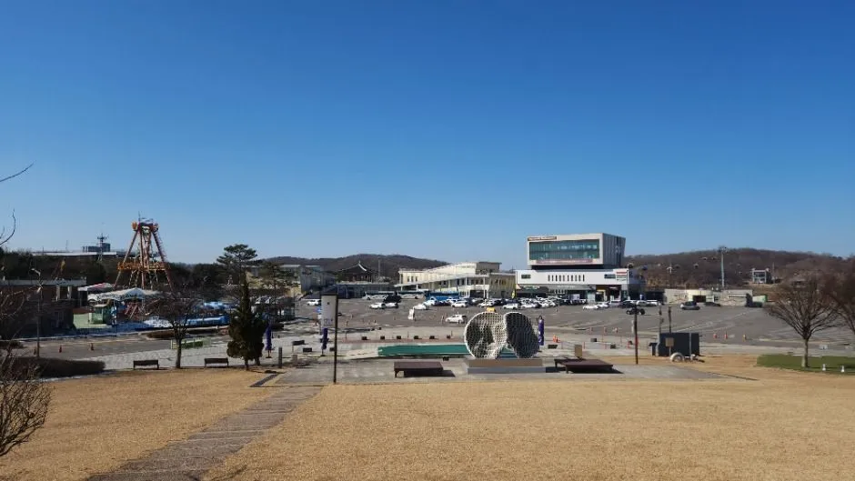
▲ 임진각 곤돌라 인근 포장 광장 일대. 주차장 본체가 아니라 임진각 일대의 풍경이며 축제 기간 모습은 아니다 사진=한국관광공사
임진각 자체의 시설·요금은 임진각 평화누리공원 가이드에서 더 자세히 다뤘다.
ℹ️ 축제 일정이 '하루'로 알려졌다면
일부 지역 검색 결과나 이전 연도 글은 '10월 17일' 한 날짜만 보여 줄 수 있다. 공식 기준은 10월 17일(토)과 18일(일) 이틀이다. 어느 날이든 DMZ 관광은 별도 예약·매표가 필요하고, 일요일 쪽이 귀경 정체가 겹칠 수 있다(정체는 추정).
4. 임진각 연계 코스 — 평화누리·곤돌라·DMZ 평화관광
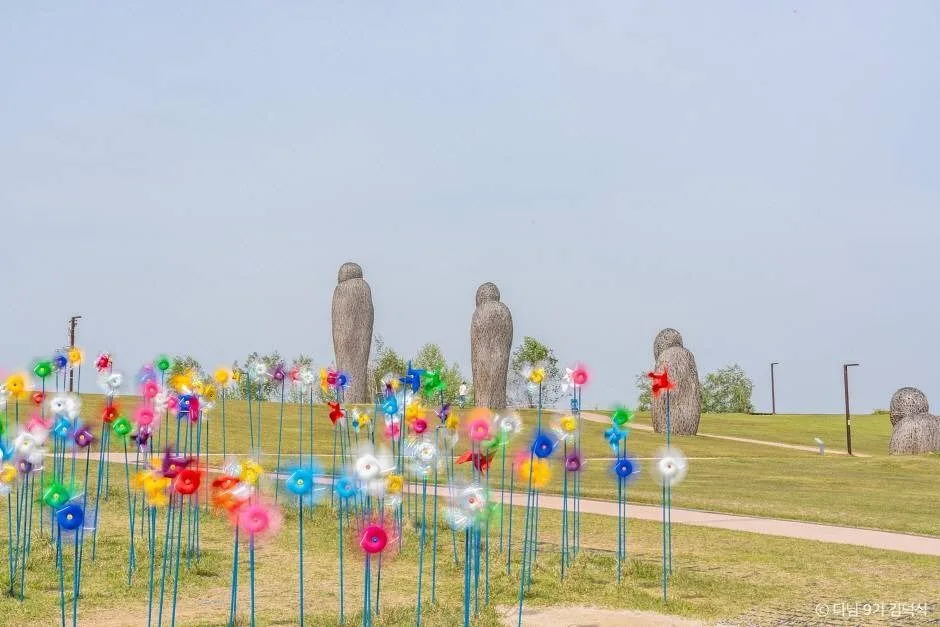
▲ 평화누리공원의 바람개비 언덕. 축제장 바로 옆이라 도보로 이어 걸을 수 있다 사진=한국관광공사
축제장이 있는 평화누리는 바람의 언덕과 바람개비로 알려진 곳이다. 먼저 인삼 장터와 부스를 보고, 공원을 한 바퀴 돈 뒤 오후에 DMZ 프로그램을 잇는 것이 자차 이용자에게는 무난한 순서다. 아래 표는 앞선 기사에서 공식 자료로 확인한 값을 정리한 것이다.
| 단계 | 내용 | 자차 팁 |
|---|---|---|
| 1. 축제장·평화누리 | 인삼 장터, 전시관, 바람의 언덕 산책(무료) | 임진각 주차장에 세우고 도보 이동 |
| 2. 임진각 평화곤돌라 | 임진강을 건너 캠프 그리브스까지 편도 850m | 주말 09:00~19:00, 일반 캐빈 왕복 대인 12,000원(공식 사이트). 주말 대기 가능성, 강풍 시 운행 중단 가능. 031-952-6388로 확인 |
| 3. DMZ 평화관광(제3땅굴·도라전망대) | 임진각 DMZ 매표소에서 현장 매표, 매표 09:00~14:30, 월요일 휴관 | 신분증 원본 필수. 이틀 모두 토·일이라 휴관일은 아님 |
| 4. 통일촌 장단콩마을 | 민통선 안 마을, 장단콩 두부·청국장 식당 | 내 차 진입 불가, 프로그램 경로에 따름 |
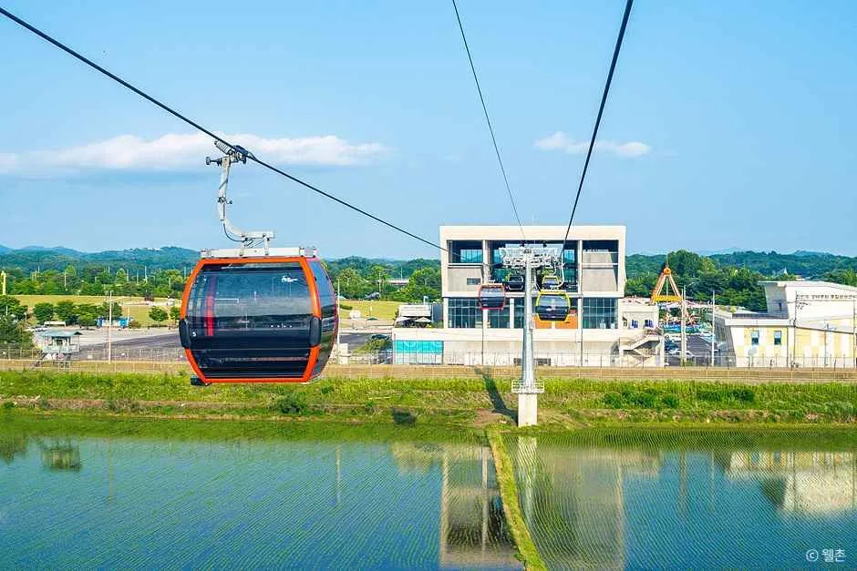
▲ 임진각 평화곤돌라. 민간인통제구역을 가로지르는 국내 최초의 곤돌라로 소개된다 사진=한국관광공사
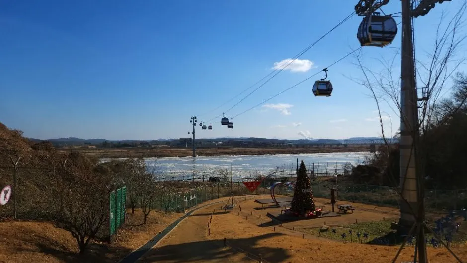
▲ 곤돌라 노선에서 본 임진강 쪽 풍경. 촬영 시기는 확인되지 않았다 사진=한국관광공사
| 항목 | 내용 |
|---|---|
| 운행시간 | 평일 09:00~18:00, 주말·공휴일 09:00~19:00(매표는 종료 30분 전까지) |
| 일반 캐빈 왕복 | 대인 12,000원, 소인(만 3세 초과~초등학생) 10,000원 |
| 크리스탈 캐빈 왕복 | 대인 15,000원, 소인 13,000원 |
| 할인 | 20명 이상 단체는 1인당 1,000원가량 할인, 국가보훈·장애인·경로 우대 법정 할인(일반 10,000원·크리스탈 13,000원), 파주시민 별도 할인 |
| 휴장 | 3·6·9·12월 첫째 주 월요일 분기 안전점검(10월은 해당 없음) |
| 탑승 조건 | 신분증 필수(운전면허증·여권·모바일 신분증 등), 보안 서약, 반려동물 불가 |
| 예매 | 현장 매표 가능, 온라인 예매는 예매 후 2시간 뒤부터 이용 |
10월 17일(토)과 18일(일)은 주말 시간표가 적용돼 19시까지 운행하고 18시 30분에 매표가 끝난다. 유모차와 휠체어는 일반 캐빈에 실을 수 있다. 철책·초소 등 군사시설 촬영과 SNS 게시는 금지돼 있다. 요금표는 공식 사이트 게시본이며 축제 기간 별도 조정 여부는 확인하지 못했다. 캠프 그리브스에서 머무는 시간까지 고려하면 오후 이른 시간에 타야 여유가 있다(소요시간은 추정).
임진각 평화곤돌라 공식 사이트에서 요금 확인 가능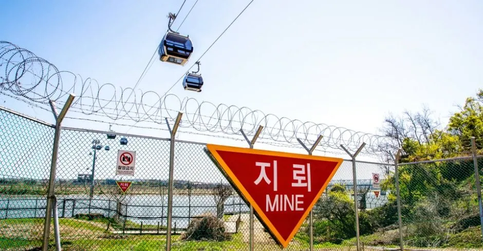
▲ 철책 위를 지나가는 곤돌라 캐빈과 지뢰 표지판. 철책과 군사시설 촬영은 금지돼 있어 직접 찍을 때 주의해야 한다 사진=한국관광공사
민통선 안쪽은 자가용으로 개별 진입할 수 없다. 파주시 DMZ 평화관광은 임진각 매표소에서 표를 산 뒤 셔틀버스로 이동하는 방식이고 모든 출입자가 신분을 확인받는다. 요금은 코스별 4,000원대부터로 알려져 있으나 올해 요금은 확인하지 못했고, 규정은 DMZ 평화의 길·민통선 차량 규정 기사에 정리했다. 축제 주말에는 임진각에 사람이 몰리므로 DMZ 프로그램 인원이 평소보다 빨리 찰 가능성이 있으나, 공식 발표는 확인하지 못했다.
임진각에서는 같은 가을 시즌에 음악 행사도 열린다. 2026 파주포크페스티벌 기사에서 임진각 야간 행사 분위기를 볼 수 있다.
파주시 DMZ 평화관광에서 예약·요금 확인 가능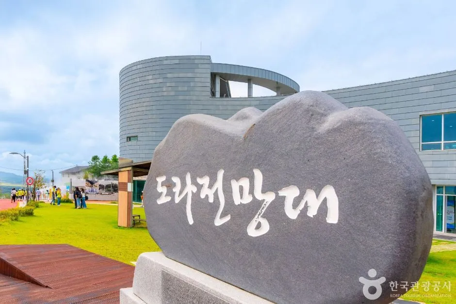
▲ 도라전망대 표석. 한국관광공사 DMZ 평화의 길 제3땅굴·도라전망대 코스 소개 사진이다 사진=한국관광공사
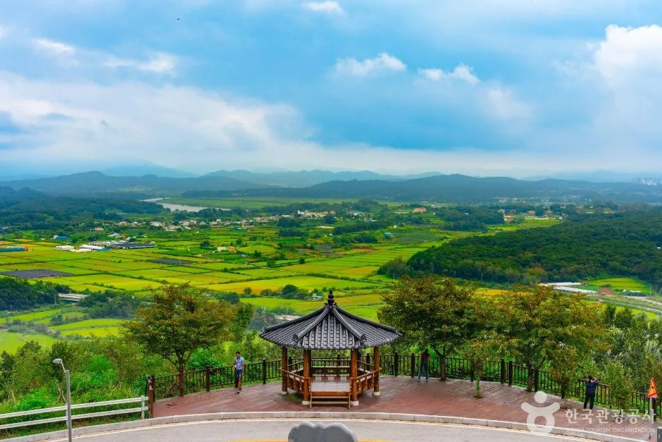
▲ 도라전망대 일대의 정자와 북쪽 방향 평야. 계절·촬영 시기는 확인되지 않은 일반 풍경이다 사진=한국관광공사
한국관광공사의 'DMZ 평화의 길' 제3땅굴·도라전망대 코스 소개는 임진각, 도라전망대, 도라산평화공원을 하나의 코스로 묶는다. 위 사진도 이 코스 소개에 실린 것이다. 이 구간은 개별 차량으로 직접 가지 못하고 매표 후 셔틀로 이동한다. 코스별 소요시간과 올해 운영 상황은 파주시 DMZ 평화관광에서 확인하지 못했다.
5. 장단콩 한 끼 — 어디서, 어떻게 먹나
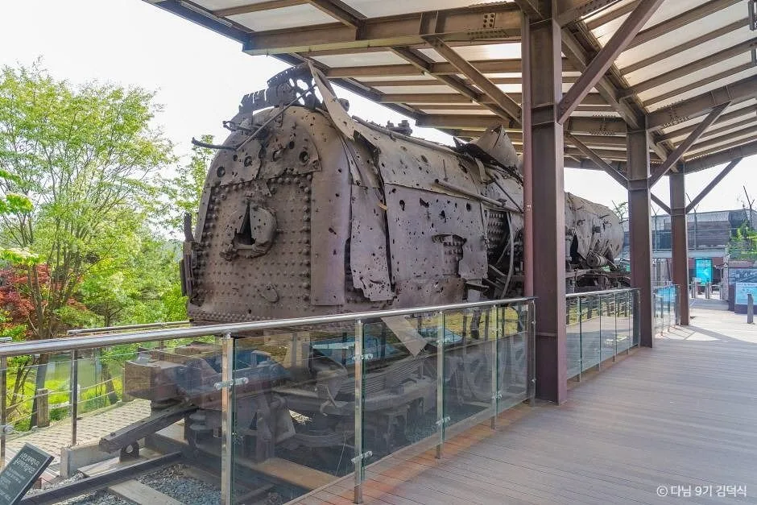
▲ 임진각에 전시된 장단역 증기기관차 화통. 장단은 군사분계선 인근 옛 장단군 일대를 가리키는 이름이다 사진=한국관광공사
장단콩은 한국 최초의 콩 장려 품종으로 알려졌고 임금께 진상되었다고 전해진다. 경기도 끝 민통선 안의 세 마을(군내면 백연리 통일촌, 장단면 조산리 대성동, 진동면 동파리 정착촌)을 장단콩마을이라 부른다. 한국전쟁 전까지 장단군 소속이었던 데서 이름이 왔다. 임진강 주변 사질 참흙이 배수가 좋아 콩 농사에 알맞다는 설명이 관광 자료에 소개된다.
| 선택지 | 위치 | 자차·접근 팁 |
|---|---|---|
| 통일촌 장단콩마을 | 파주시 군내면 통일촌길 64(민통선 안) | DMZ 평화관광 경로에 포함된 코스를 통해 방문. 개별 차량 진입 불가(DMZ 평화관광 경로로만 방문) |
| 민통선 밖 장단콩 두부 식당 | 파평면 장마루로 등 파주 시내 여러 곳(TourAPI 등록 업소) | 내비로 개별 방문 가능. 영업시간·휴무는 업소별 확인 필요 |
대표 메뉴는 두부·된장·청국장·콩비지·순두부로 구성한 장단콩 정식이다. 다만 개별 식당의 가격·휴무는 확인하지 못했으므로 방문 전 전화를 권한다. 민통선 안 식당은 DMZ 프로그램 시간표에 묶여 있어서 '축제 → 땅굴 → 통일촌 점심'이 자유롭지 않을 수 있다. 시간이 빠듯하면 민통선 밖 식당으로 돌리는 편이 현실적이다.
통일촌 장단콩마을 진입 규정은 자료마다 표현이 다르다. 한국관광공사 안내에는 신분증 지참이 필수이고 민통선 안에 있어 일반인 접근이 제한되며, 통일대교에서 식당에 미리 연락해 인솔자가 나와야 검문을 통과해 들어갈 수 있다고 되어 있다. 체류는 약 2시간 정도로 소개하고, 식사 뒤에는 통일촌 농산물 직판장이나 장단콩 가공체험장을 둘러보는 코스를 안내한다. 즉 '내 차로 임의로 들어갈 수 없다'는 점은 같지만, 식당 사전 연락과 인솔을 통한 개별 방문 가능성이 완전히 닫혀 있는지는 공식 자료로 확인하지 못했다. 식당 연락처와 축제 주말 수용 여부도 확인하지 못했으므로, 확실한 방법은 DMZ 평화관광 경로를 이용하는 것이다.
6. 반나절·하루 코스와 체크 포인트
| 시각 | 할 일 | 근거·주의 |
|---|---|---|
| 09:00 전후 | 임진각 주차장 도착, 장터 먼저 둘러보기 | 주차장 09:00 개장. 직거래 장터 운영시간은 확인하지 못함 |
| 10:30~12:00 | 장단삼백요리 경연 관람(17일 기준), 전시관·허준 약방 한방촌, 평화누리 산책 | 경연 시각은 서울신문 보도 기준. 18일과 그 밖 프로그램 시간은 미공개 |
| 12:00~14:00 | DMZ 평화관광 매표 후 입장 | 매표는 14:30 마감, 월요일 휴관 |
| 오후 늦게 | 임진각 평화곤돌라 왕복 | 주말 09:00~19:00 운행, 매표 18:30 마감(공식 사이트). 소요시간은 추정 |
| 저녁 | 달빛극장 | 상영 시각·작품 미공개, 야간 출차 확인 필요 |
이 시간표는 공식 일정이 아니라 확인된 운영시간(주차장 09:00, DMZ 매표 14:30)에 맞춘 제안이다. 공식 시간표가 공개되면 우선하라.
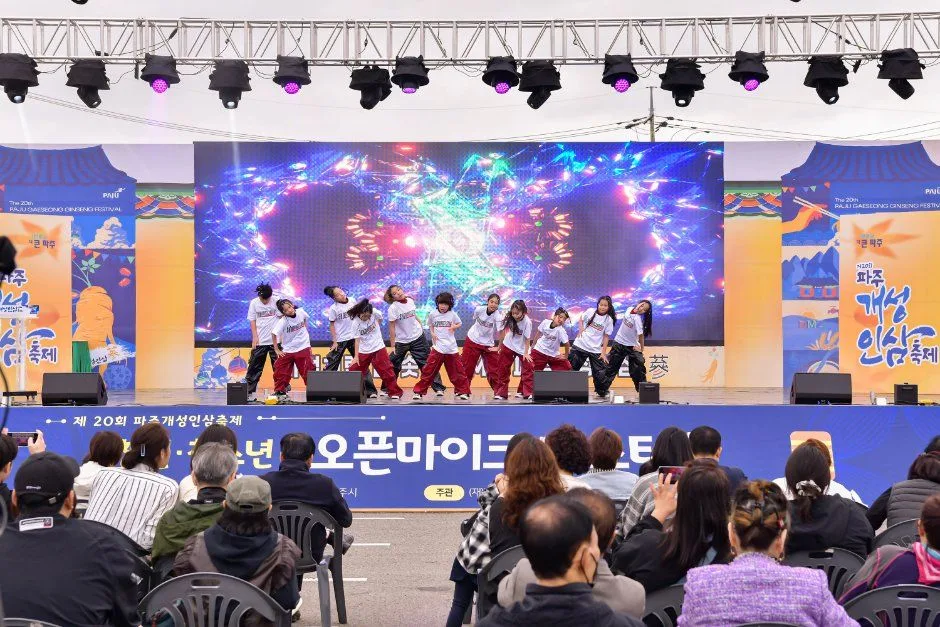
▲ 축제 무대 공연 풍경. 지난 회차(제20회) 현장 사진이다 사진=한국관광공사
✅ 가기 전 체크리스트
· 기간: 2026년 10월 17일(토)~18일(일), 이틀, 입장 무료
· 장소: 임진각광장·평화누리(파주시 문산읍 임진각로 177)
· 주차: 임진각 관광지 주차장 869면, 09:00~18:00, 경형 1,000원/중소형 2,000원/대형 5,000원
· 셔틀: 문산역 1번 출구~임진각 09:00~17:00 무료(파주시 사이트·2026 보도), 임시 주차장 올해 안내는 미확인(2025년은 보조주차장·평화주차장 무료)
· 곤돌라: 주말 09:00~19:00, 일반 캐빈 왕복 대인 12,000원, 신분증 필수
· DMZ 평화관광: 매표 09:00~14:30, 신분증 원본 필수, 민통선 안은 개별 차량 진입 불가
· 마라톤·달빛극장·개막식 시간, 올해 인삼 가격표: 확인하지 못함, 파주시 031-940-5282 문의
· 문의: 임진각 관광안내소 031-950-1904
7. 요약
제21회 파주개성인삼축제는 2026년 10월 17일(토)~18일(일) 이틀간 임진각광장·평화누리에서 열리고 입장은 무료다. 6년근 파주개성인삼과 농특산물 약 10톤을 시중보다 15~20% 싸게 직거래하며, 장단삼백요리 전국 경연대회(25개 팀), 허준 약방 한방촌, 인삼비빔밥 만들기, 달빛극장이 마련된다.
자차는 자유로 임진각IC로 접근하고 임진각 주차장(869면, 09:00~18:00, 소형 2,000원 등)을 쓴다. 민통선 안쪽 DMZ 코스와 통일촌 장단콩마을은 개별 차량 진입이 안 되며 DMZ 평화관광 매표(09:00~14:30)와 신분증이 필요하다. 마라톤 일정, 개막식, 달빛극장 시간, 올해 임시 주차·교통통제, 올해 등급별 인삼 가격은 확인하지 못했으니 출발 전 파주시에 문의하자.